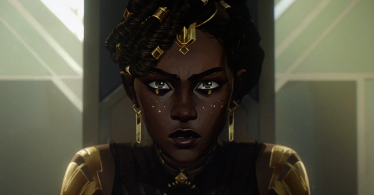

Una vez exiliada de Noxus por su propia familia, los Medarda, Mel no tuvo más remedio que hacerse un nombre en la ciudad del Progreso, llegando incluso (gracias a su astucia y facilidad para manipular a las personas) a formar parte del Ethos. Ve en Jayce y su investigación un gran potencial y decide apadrinarlo, ayudándolo ante el Consejo y luego aconsejándolo cuando éste pasa a formar parte del mismo, como “el Hombre del Progreso”. Las tensiones políticas no solo entre Zaun y Piltover sino también en su tierra natal (en especial al recibir una visita inesperada por parte de su madre) llevan a Mel a convencer a Jayce de utilizar la tecnología Hex para fabricar armas, lo que genera una grieta entre el joven inventor y Viktor.